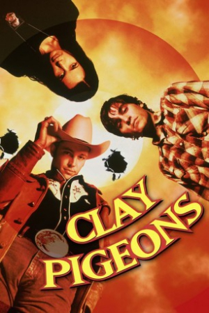

Country:United Kingdom, 104 minutes
Spoken languages:English
Genres:Crime, Comedy
Director(s):David Dobkin
Writer(s):Matthew L. Healy
Video Codec:Unknown
Number: 2370


Certification:R
Storyline:
Clay is a young man in a small town who witnesses his friend, Earl kill himself because of the ongoing affair that Clay was having with the man's wife, Amanda. Feeling guilty, Clay now resists the widow when she presses him to continue with their sexual affairs. Clay inadvertently befriends a serial killer named Lester Long, who murders the widow in an attempt to "help" his "fishing buddy."
Cast:


Medium: Original DVD,
Loaned: No
Aspect ratio: Unknown